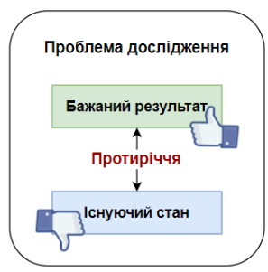

Методи науково-педагогічного дослідження
Проблема дослідження — це суперечність між існуючим станом певного явища та бажаним
результатом.
Це ключове питання, на яке має відповісти дослідження.

| Вимога | Пояснення |
|---|---|
| Чітке формулювання | Проблема повинна бути сформульована ясно, конкретно та лаконічно. |
| Актуальність | Проблема має бути актуальною для сучасної науки та практики. |
| Наукова новизна | Дослідження має передбачати отримання нових знань або уточнення вже існуючих. |
«Недостатня ефективність використання інтерактивних методів навчання у початковій школі та необхідність розробки нових підходів до підвищення мотивації учнів до навчання».
| Вимога | Пояснення |
|---|---|
| Конкретність | Тема має бути конкретною і відображати основний напрямок дослідження. |
| Актуальність | Тема має бути актуальною для сучасної педагогічної науки. |
«Формування мотивації до навчання у молодших школярів засобами інтерактивних методів».
| Вимога | Пояснення |
|---|---|
| Конкретність | Мета має бути сформульована чітко та конкретно, що дозволяє визначити напрямок дослідження і сформулювати конкретні завдання. |
| Досяжність | Мета має бути реальною та досяжною в рамках дослідження, що гарантує успіх і корисність результатів. |
⚠️ Якщо мета дослідження буде розмитою або недосяжною, дослідник ризикує витратити час і ресурси даремно.
«Розробити та експериментально перевірити ефективність авторської програми використання інтерактивних методів навчання для підвищення мотивації учнів початкової школи».
Більш широке поняття — клас явищ, процесів або відносин, які існують об'єктивно і підлягають дослідженню.
Конкретна частина об'єкта, яка безпосередньо вивчається в дослідженні.
Об'єкт: процес навчання учнів початкової школи.
Предмет: формування мотивації до навчання учнів початкової школи засобами
інтерактивних методів.